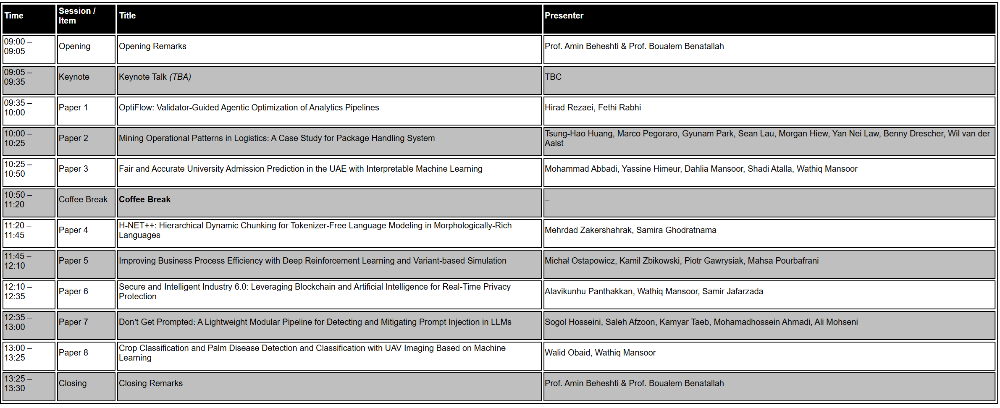

Welcome
Business processes are central to the operation of public and private enterprises. Today, the advancement in Service Oriented Computing, Artificial Intelligence (AI) and Data Science has the potential to transform business processes in fundamental ways; by assisting knowledge workers in communicating analysis findings, supporting pieces of evidence and to make decisions.
The 6th International Workshop on AI-enabled Process Automation (AI-PA) will be held as one of the workshops of the 23nd International Conference on Service Oriented Computing (ICSOC 2025). The AI-PA workshop aims at providing a forum for researchers and professionals interested in Artificial Intelligence (AI) enabled Business Processes and Services; and in understanding, envisioning and discussing the opportunities and challenges of intelligent Process Automation, Process Data Analytics and providing Cognitive Assistants for knowledge workers. Recognizing the broad scope of the potential areas of interest, the workshop is organized into FOUR themes, as follows:
Call For Papers
Theme 1: Artificial Intelligence (AI), Services and Processes
- Agentic AI for Adaptive, Goal-Driven Service Ecosystems
- ProcessGPT
- Intelligent Knowledge Lakes
- Machine Learning, Deep Learning, Natural Language Processing
- Intelligent Knowledge Representation
- Intelligent user experience
- Intelligent Crowdsourcing
- Cognitive Processes
Theme 2: BigData, Services and Processes
- Social Data Analytics
- Process Data Lakes and Knowledge Lakes
- Process Data Science
- Data-Driven Processes
- Knowledge-Intensive Processes
- Process Data Engineering
- Process Data Organizations
- Process Data Curation
- Process Data Mining
- Process Data Analytics
- Process Data Visualization
- Process Data Summarization
- Storytelling with Process Data
Theme 3: Smart Entities, Services and Processes
- Internet of Things (IoT)
- Sensor Technology and Data Analytics
- Machine-to-Machine and Human-to-Machine Communication
- Advanced Automation and Robotics (including collaborative robots)
Theme 4: AI in Industry
- AI for Industry 4.0
- Services in Organizations and Governments
- Knowledge workers: Cognitive Assistance and Analytics
- Customer Journey and KYC (Know Your Customer)
- Intelligent Recommender systems
- AI-enabled applications, such as:
- AI-enabled Policing
- AI-enabled Banking
- AI-enabled Education
- AI-enabled Health
Workshop's Previous Editions:
- The 5th International Workshop on AI-enabled Process Automation, Dec 3 2024, ICSOC Conference, Tunis, Tunisia
- The 4th International Workshop on AI-enabled Process Automation, Nov 28-29 2023, ICSOC Conference, Rome, Italy
- The 3rd International Workshop on AI-enabled Process Automation, Nov 28-29 2022, ICSOC Conference, Dubai, UAE
- The 2nd International Workshop on AI-enabled Process Automation, Nov 22-25 2021, ICSOC Conference, Dubai, UAE
- The 1st International Workshop on AI-enabled Process Automation, December 14-17 2020, ICSOC Conference, Dubai, UAE
Paper Submission Instructions
-
Position papers: 8-page limit, describing a position statement on issues related to the topics of the workshop. Position papers would lead to interesting discussions by raising key questions, controversial points of view, challenges, and ideas to address the identified issues.
-
Research papers: 12-page limit, describing original and novel research work, including research results and evaluations. The papers may present the ongoing research, novel ideas with preliminary results, advances of the state of the art, analysis of the current results in the state of the art or state of the practice, or experience in implementing the theories.
-
Industry Papers: 12-page limit, This track will be an opportunity for people associated with industry and academia to present their novel ideas while attracting funding and/or further expanding collaborations. An important criterion for papers to be submitted to the Industry Track is a clear industrial association, either in the form of an extensive evaluation of research results in industrial use cases or active participation of industry representatives as co-authors.
-
Papers should be formatted according to Springer’s LNCS Formatting Guidelines. Submissions must be in English and must not exceed the above-mentioned limit pages (including abstract, figures and references). Each paper must be submitted on or before the provided deadlines. The final submission should be formatted according to Springer’s LNCS Camera-ready instructions. Each paper will be reviewed by at least three reviewers.
-
All papers must be submitted electronically, as PDF file, to the Workshop Submission System:
https://easychair.org/conferences/?conf=icsoc2025
Important Dates
- Paper Abstract Deadline: 15th September 2025 (Optional)
- Paper Submission
30 September 2024: 14 October 2025
- Paper Notification Deadline:
24 October 2025 27 October 2025
- Author Registration (early bird): 31 October 2025
- Camera-ready: 07 November 2025
Workshop Organizers
Chairs:
- Prof. Amin Beheshti (Full Professor of Data Science and Director of the Centre for Applied Artificial Intelligence, Macquarie University, Australia)
- Prof. Boualem Benatallah (Full Professor of Computer Science, School of Computing, Dublin City University, Ireland)
- Prof. Hamid Motahari (Founder and CEO, UpBrains AI Inc., USA; and Honorary Professor at Macquarie University, Australia)
Workshop Program
Day 1 (Sydney, Australia)
CLICK HERE
Day 2 (Shenzhen, China)
CLICK HERE
Zoom Link:
https://macquarie.zoom.us/j/87133948499?pwd=cinE4b6mgnU1AHKsoVBMjP4vc3FFQP.1
Meeting ID: 871 3394 8499
Passcode: 839349

Program Committee
Schahram Dustdar, Vienna University of Technology
Michael Sheng, Macquarie University, Australia
Samira Ghodratnama, Google, USA
Adel N. Toosi, The University of Melbourne, Australia
Basem Suleiman, The University of New South Wales, Australia
Azadeh Ghari Neiat, Deakin University, Australia
Daniela Grigori, Paris Dauphine University, France
Hamid Alinejad, The University of New South Wales, Australia
Mohammad Allahbakhsh, Ferdowsi University of Mashhad, Iran
Qiang Qu, Shenzhen Institutes of Advanced Technology, China
Bahman Javadi, Western Sydney University, Australia
Morteza Saberi, University of Technology Sydney, Australia
Young Lee, Macquarie University, Australia
Enayat Rajabi, Cape Breton University, Canada
Adrian Mos, Naver Labs, France
Gordana Dodig-Crnkovic, Chalmers University of Technology, Sweden
Yuankai Qi, Macquarie University, Australia
Sajib Mistry, Curtin University, Australia
|